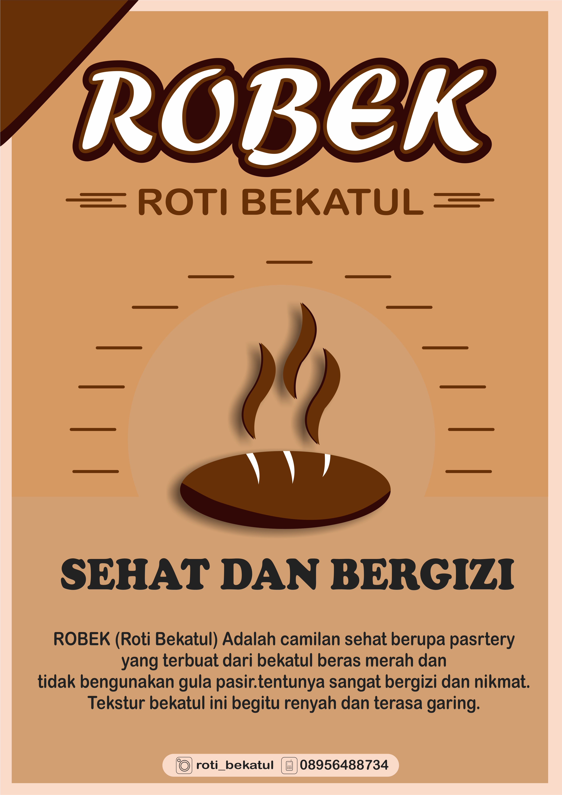
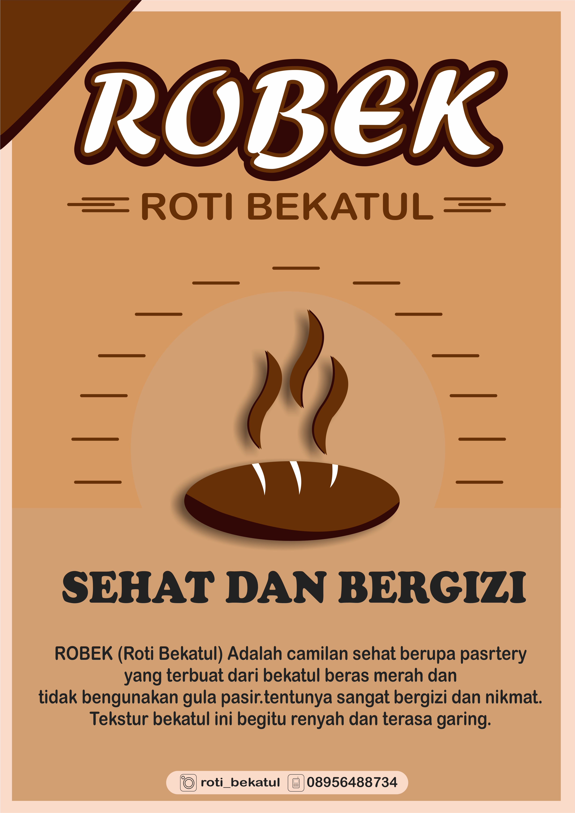

.png)
Tentang Saya
Saya adalah Mahasiswa aktif Politeknik Negeri Banyuwangi, Semester 6, Jurusan Bisnis dan Informatika, Program Studi Teknologi Rekayasa Perangkat Lunak.Saya memiliki keahlian dalam UI/UX Design, Desain Grafis, dan Front-End Development. Dengan latar belakang ini, saya terbiasa merancang antarmuka yang intuitif, mengembangkan tampilan web yang responsif, serta memastikan pengalaman pengguna yang optimal. Saya juga memiliki ketertarikan dalam eksplorasi tren desain terbaru dan teknologi web untuk menciptakan solusi digital yang inovatif.
Portofolio
Portofolio berikut adalah hasil dari desain
Desain Logo
Desain Logo yang saya buat ini dirancang untuk mencerminkan identitas dan nilai utama yang ingin disampaikan. Dengan perpaduan elemen visual yang unik serta warna yang selaras, desain ini mengutamakan kesederhanaan namun tetap memiliki karakter yang kuat dan mudah dikenali.
Klik untuk lebih jelasnya


Desain Poster
Dengan sentuhan visual yang khas dan warna yang selaras, poster ini tidak hanya menyampaikan pesan, tetapi juga membangun identitas yang kuat. Desain yang sederhana namun berkarakter membuatnya mudah dikenang siapa pun yang melihatnya.
Klik untuk lebih jelasnya


 

Desain Pamflet
Desain pamflet ini dibuat untuk menggambarkan identitas serta nilai-nilai penting yang ingin disampaikan. Dengan mengombinasikan elemen visual yang khas dan warna yang harmonis, pamflet ini mengedepankan kesederhanaan sekaligus memiliki ciri khas yang kuat dan mudah diingat.
Klik untuk lebih jelasnya


Desain Media Digital
Desain konten Instagram ini dirancang untuk merepresentasikan karakter dan pesan utama yang ingin disampaikan. Perpaduan warna yang selaras dengan elemen visual yang unik memberikan kesan sederhana namun tetap berkarakter dan mudah dikenali.
Klik untuk lebih jelasnya


Sertifikat
Sertifikat yang saya peroleh dari tahun 2021 hingga 2024